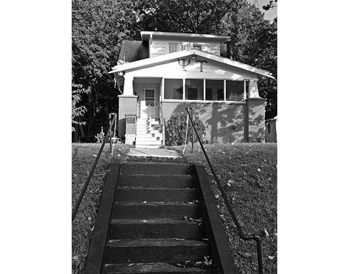

Chapter 37 on the roll
The Epsilon Iota


- Position on the roll#37
- InstitutionRensselaer Polytechnic Institute
- Chartered1982
- StatusActive since 1982
- Coat of armsfull-size PDF
In the archive
Pages that name the Epsilon Iota Chapter or its institution.
Named on 124 pages across 68 volumes of the archive.
…tackle on the varsity eleven for three years. He later coached football at Rensselaer Polytechnic Institute and Williams College. Brother Francis is survived by his widow, three children, his mother, brother and three sisters. HANSON C. GIBSON Delta, '54 D…
Page35…graduation from Union he took a post-graduate course in engineering at the Rensselaer Polytechnic Institute, Troy, N. Y. and became Chief Engineer of The Turbine and Machine Works at Troy. In 1869 Union CoUege awarded him the degree of A. M. He moved to No…
Page44…tinent. It was within ten years of the founding of our Fraternity that the Rensselaer Polytechnic Institute, the first scientific school in this country, was founded upon a German model; and that influence, going back to the old traditional universities of…
Page17…n College and been considering the place of fraternities in college nearby Rensselaer Polytechnic Institute. life and had seized the 150th Anniversary of Kappa Among the achievements of the fraternities in the Alpha at Union College as an exceUent rallying…
Page11…imiture. In November we pledged four Another undertaking of the fall semes Rensselaer Polytechnic Institute ter was the formation of an alumni asso fine freshmen: Teresa Grocela, Eric ciation. Alumni of the Albany-Troy area This past fall proved to be a ver…
Page20THE DIAMOND ? PSI UPSILON Thirty-Seventh Charter Granted April 16, 1982 Epsilon Iota Chapter Rensselaer Polytechnic Institute USPS 156-460
…wed by a ral awards. For the second straight year For the gathering at the Epsilon Iota Chapter, the Chapter House. During the course of the and the third of the last four years, we semester began earlier than for any other day, the House was vi…
…n Place, Ithaca, NY 213 Follen Rd., Lexington, MA 02173 14850 Epsilon Iota Rensselaer Polytechnic Institute 1982 Beta Beta Trinity College 1880 81 Vernon St. 2140 Burdett Ave., Troy, NY 12180, Tel. 518-274- Hartford, CT 06106, Tel. 203-728-9893. A…
Page24…ilon Society of Georgia, was reorga The Zeta Tau is no longer the "new kid Rensselaer Polytechnic Institute nized during fall quarter to better meet on the block" at Tufts 1982 the needs ofthe undergraduate University. It has Chapter. been almost two years…
…ll in all things look good for the Gam an extremely successful banquet and Rensselaer Polytechnic Institute ma Tau at this point. Although we are celebration were held in early April. 1982 down somewhat in terms of numbers of With the pride evident at this…
…Foflen Rd., Lexington, MA 02173 Syracuse, NY 13210 Reta Reta Epsilon Iota Rensselaer Polytechnic Institute 1982 Trinity College 1880 81 Vernon St 2140 Burdett Ave., Troy, NY 12180, Tel. 518-274- Hartford, CT 06106, Tel. 203-728-9893. Alumni Presi…
Page26…er '20 John C. McTague '45 (2) Anatole Zaitzeff '31 Scott P. George 76 (7) Rensselaer Polytechnic Institute Harry W, Neale '50 Epsilon Nu Chapter David S. Harding '78 Peter C. S. Nicoll '65 (9) Rolf W. Hemmerling '64 (6) Robert A, Corell '82 Neil C. Proverb…
…ofhis efforts on behalf sel. This national association functions as of the Epsilon Iota Chapter. Brother a bar association for life insurance Weeks has the distinction of being the lawyers. Its mission includes the promo only member who did not…
…en Rd., Lexington, MA 02173 Beta Beta Trinity College 1880 81 Vernon St., Rensselaer Polytechnic Institute 1982 Epsilon Iota Hartford, CT 06106, Tel. 203-728-9893. Alumni Presi 2140 Burdett Ave., Troy, NY 12180, Tel. 518-274- dent: Dennis Dix, Jr. '66…
Page22…, MA 02173 Beta Beta Trinity College 1880 81 Vernon St., Epsilon Iota Rensselaer Polytechnic Institute 1982 Hartford, CT 06106, Tel. 203-728-9893. Alumni Presi 2140 Burdett Ave., Troy, NY 12180, Tel. 518-274- dent: Dennis Dix, Jr. '66, 241 Avon Mo…
Page18…U's, particularly those who had cleared just before a decision was made tp Epsilon Iota Chapter at Rensselaer passed away in the preceding year. Un reschedule the photographer. Polytechnic Institute, the Gamma Tau fortunately, what was not antic…
…h our efforts, EPSILON IOTA 1973 and many said that it was one of the best Rensselaer Polytechnic Institute The fall semester at Duke was one con homecomings that they ever attended. 1982 Once again our alumni proved them sisting of changes and new experien…
…9 The Diamond is being read, his fierce Zeta Tau, and New President of the Epsilon Iota Chapter determination almost assuredly will have houses. Please take the initiative and Psi Upsilon Foundation enabled him to return to his typically im send…
…the Sports Illustrated, and a variety of local newspapers. We applaud the Epsilon Iota Chapter for their Fraternity's magazine. creativity, their perseverance, and their spirit!
…hood is strong. Ross M. Weisman '88 the wisdom and experience of the older The Epsilon Iota Chapter has been Assistant Editor brothers, the Chi Delta has been setting having its ups and downs recently. higher goals and exploring new possibil We were…
…we EPSILON IOTA Paul B . Littmann '86 might experience on campus. Rob Crin Rensselaer Polytechnic Institute Secretary gle spoke to the brothers and little sisters 1982 about substance abuse and responsible CHI DELTA drinking, and Dr. John Barrow held a Thi…
…liam K. Burriss, '48 Robert C. Butterfield, '43 (5) John L. Bones, '51 (3) Rensselaer Polytechnic Institute George F. White, '44 (10) Richard D. Calhoun, '33 (9) James F. Cameron, '16 (6) Robert A. Burns, '55 (15) Theodore J. Berger, Jr. , '83 (3) WELCOME…
…of our EPSILON IOTA celebration. outstanding debts paid off by the end of Rensselaer Polytechnic Institute Elisa H Barney '88 . this semester. Homecoming was a lot of 1982 Alumni Secretary fun this year, considering that we actually had alumni come back an…
…ull ligations and continue to expand. We have been extraor chapter status. The Epsilon Iota Chapter at R.P.I, became dinarily fortunate in the opportunities that have been pre a full chapter in 1982 and the Phi Beta at William and Mary sented to us…
…Working in conjunction with diabetes officials at the Dartmouth-Hitchcock Epsilon Iota Chapter Medical Center, the brothers of the Zeta Rensselaer Polytechnic have worked dihgently in every facet of John Herrick, Zeta '88, accepts Award Institu…
…165 College Avenue, Somerville, MA 02144, Tel. (617) 623-5461 Epsilon Iota Rensselaer Polytechnic Institute 1982 2140 Burdett Avenue, Troy, NY 12180, (518) 274-8408 Phi Beta College of William and Mary 1984 CS Box 1803, Williamsburg, VA 23186, (804) 253-4…
Page12…'89 President President PHI BETA EPSILON IOTA College of Wflliam and Mary Rensselaer Polytechnic Institute 1982 1984 Official Greetings from the Phi Beta! All is great In regard to the issue which I was asked to address in this report, the Epsilon Iota at…
…Balch, Phi, Ensigi, United State! Political Science, University of minois Rensselaer Polytechnic Institute Joseph P. Beaulieu, Omega. Geoi| . . . . Law . Thomas H. BHss, Jr., Zeta, Analyst, Shearson Lehman Hutton . . Turner F. Bluechel, Theta Theta, Field…
…165 College Avenue, Somerville, MA 02144, Tel. (617) 625-0926 Epsilon Iota Rensselaer Polytechnic Institute 1982 2140 Burdett Avenue, Troy, NY 12180, (518) 274-8408 Phi Beta College of Wilham and Mary 1984 CS Box 1803, Williamsburg, VA 23186, (804) 253-44…
Page16…ss than comfortable fi activities and developments of the fra EPSILON IOTA Rensselaer Polytechnic Institute nancial position, but we are getting by. temity since the convention last met with And the brothers' morale is still high. the Delta Chapter at New Y…
…ollege Avenue, Somerville, MA 02144,,Tel. (617) 625-092^ ' Epsilon Iota Rensselaer Polytechnic Institute 1982 2140 Burdett Avenue, Troy, NY 12180, (5l8) 274-8408 * Phi Beta College of William and Mary / 1934 CS Box 1803, Williamsburg, VA 23186, (804) 2…
Page22…165 College Avenue, Somerville, MA 02144, Tel. (617) 625-0926 Epsilon Iota Rensselaer Polytechnic Institute 1982 2140 Burdett Avenue, Troy, NY 12180, (518) 274-8408 Phi Beta College of William and Mary 1984 WiUiamsburg, VA 23186, (804) 253-4148 Kappa Phi…
Page28…981 c/o Student Activities Office, Box 649, Medford, MA 02155 Epsilon Iota Rensselaer Polytechnic Institute 1982 2140 Burdett Avenue, Troy, NY 12180, (518) 274-8408 Phi Beta College of William and Mary 1984 Williamsburg, VA 23186, (804) 253-4148 Kappa Phi…
Page16…Activities Office, Box 649, Medford, MA 02155 (617) 776-0029 Epsilon Iota Rensselaer Polytechnic Institute 1982 2140 Burdett Avenue, Troy, NY 12180, (518) 274-8408 Phi Beta College of William and Mary 1984 Williamsburg, VA 23186, (804) 221-5865 Kappa Phi…
Page28…d throughout the year to ful The school year began on the right foot as we Epsilon Iota Chapter, The chapter will be ex fill the Psi Upsilon chapter acceptance stand accepted thirteen new men into the fraternity ercising its option to purchase t…
Page6…only who should receive an award, but the majoring in Computer Science at Rensselaer Polytechnic Institute. In amount of the grant. addition to student teaching at PS 14 in Troy, she has served the Epsilon The continued success and Iota as historian and h…
Page14…management, the operations and growth of was served. He reminded all the Epsilon Iota Chapter at legal, and fraternal ex of the vision of Psi Upsilon's Sigma, Brown University, Rennselaer Polytechnic In perience at the helm. seven founders lea…
…ssistant silon, he has as a student orientation advisor at served the Iota Rensselaer Polytechnic Institute. She hockey coach for the Clinton Youth Archon and League. Brother Tucker, a resident of as is pursuing a degree in Psychology Rye, New York, is purs…
Page7…OTA VA. Brother Thomas is currently a Association of Schools of Music, and Rensselaer Polytechnic Institute first-year law student at the Thomas International Society of Music Elisa H. Barney (Smith), Epsilon Cooley School of Law in Lansing, Education. Iota…
Page39…Tufts University ( suspended, 1992 ) 1981 Indianapolis* 37) EPSILON IOTA , Rensselaer Polytechnic Institute 1982 38 ) PHI BETA , College of William and Mary 1984 July 25 , 1996 39 ) KAPPA PHI , Pennsylvania State University 1989 Executive Council Meeting, 4…
…and *97 earned most improved. The w Michael Meredith *96 was named as the Rensselaer Polytechnic Institute Epsilon Phi s Outstanding Junior for 1995. chapter average was above both tin* fraternity In academics the Epsilon lota chapter Andrew Collingwood *9…
…ersity 1973 ZETA TAU, Tufts University (suspended 1992) 1981 EPSILON IOTA, Rensselaer Polytechnic Institute 1982 PHI BETA, College of William and Mary 1984 KAPPA PHI, Pennsylvania State University 1989 BETA KAPPA, Washington State University 1991 BETA ALPHA…
Page106…ilon lota the dedication of the International (University of Pennsylvania, Rensselaer Polytechnic Institute )\ and ( )ffice. Director of Development and Alumni Services Mariann Williams . I pm arrival. memliers and guests had the op|>oHunity to better under…
…d' 1992) 1981 I he chapter's hard w ork and dedication w as l psilon lota, Rensselaer Polytechnic Institute ' 1982 rewarded when the chapter was formally installed in Phi Beta. CollegeofWilliam & Mary. 1984 April. Alumni, undergraduates, members of the kapp…
Page34…would implore each chapter to send the community while others participated The Epsilon Iota Chapter at Rensse- delegates and make Convention a in special events already scheduled on laer Polytechnic Institute in Troy, N.Y., priority. Whether it 's y…
…52 - Epsilon lota Epsilon lota - 175 F Hague Boulevard, Glemnont, NY 12077 Rensselaer Polytechnic Institute Other Oonors Honorary Directors Michael Lord ' 96 Carlyle F. Barnes, Xi * 48 Founders ' Society Ross Sparacino ' 97 Edward M. Benson Jr., Epsilon '42…
…ty (suspendedsince 1992) 1981 John Forbes; Owen Hall: Gary 37 Epsilon lota Rensselaer Polytechnic Institute 1982 Letscher; Steven Lindholm : Ryan Heenan; Ed McDevitt; Sam Menges Loosvelt, Joseph Magliochetti; Eric Mike Murphy; Ken Picariello: Maricio 38 Phi…
…e University Suspended from 1992-p resent 37 EPSILON IOTA, April 16, 1982 Rensselaer Polytechnic Institute, Troy, New York 38 PHI BETA, April 14, 1984 College of William & Mary, Williamsburg, Virginia. EPSILON OMEGA Northwestern University 39 KAPPA PHI, A…
…puter science major, Adam also served as semester she has been enrolled at Rensselaer Polytechnic Institute. scholarship chairman, grammateus, alumni relations chairman Majoring in environmental science, she is active on campus in several and ritual chairma…
Page34…e 157 th Convention marks the fourth time The Hotel Syracuse, Epsilon Iota Rensselaer Polytechnic Institute Radisson Plaza has played host to the Psi Upsilon Convention in the Beta Kappa Washington State University 20th century. Reservations must be made di…
…k August 12- 15 th, 1999 Chi DeltaDURE UNIVERSITY Joseph Ader Epsilon lota RENSSELAER POLYTECHNIC INSTITUTE KAPPA PHI WilsonBickerson a capacity of 28- a big improvement over Pennsylvania State University> PhiBeta COLLEGE OF WILLIAM & MARY the smaller, rent…
Page21…tion . Upsilon University of Rochester Zeta Dartmouth College Epsilon Iota Rensselaer Polytechnic Institute In February 1999 the Trustees of Dartmouth College shocked the Dartmouth community by declaring that wide-ranging changes in Chi Delta the fraternity…
Page4…( Dartmouth College ), Upsilon ( University of Rochester ), Epsilon Iota ( Rensselaer Polytechnic Institute ) and Lambda David M. Ely, Phi Beta 02, vice chairman of the Budget and Development Sigma ( Pepperdine University ) chapters were awarded the Committ…
Page6…y of Michi - gan ), Tau ( Universityt of Pennsylvania ) and Epsilon Iota ( Rensselaer Polytechnic Institute ) chapters for maintaining a chapter GPA above Jeff Hamilton, Lambda Sigma 03 ( Pepperdine University ) makes a point while 3.0 and the campus all- m…
Page5…PSILON IOTA Kenyon College Omicron Alumni Association Henry B. Poor, r '39 Rensselaer Polytechnic Institute Marian Segur and Family in DELTA DELTA Psi Upsilon Alumni Assoc, of Troy Memory of Phelps D, Segur, I '71 Williams College BETA KAPPA Hon. Charles E.…
Page8…U, April 24, 1981 EPSILON IOTA Tufts University, Somerville, Massachusetts Rensselaer Polytechnic Institute Suspended 1992 ^7 EPSILON IOTA. April l6, 1982 Rensselaer Polytechnic Institute, Troy, New York 38 PHI BETA, April 14, 1984 William & Mary, William…
…au - University of Pennsylvania Chi Delta - Duke University Epsilon Iota - Rensselaer Polytechnic Institute Lambda Sigma - Pepperdine University Charles A . Werner, Rahsaan Burroughs , Omega ' 55 Phi Beta 96 Alpha Omicron - New Jersey Institute of Technolog…
Page28…ega Epsilon lota reigns of The Psi Upsilon thanks to University of Chicago Rensselaer Polytechnic Institute Upsilon Foundation as many loyal brothers Alban Gashi '05 Katherine Ann D'Anna 06 president , he made a who answered the Christopher Andrew Matthew G…
Page17…chnology Patrick Decker CHI DELTA, Duke University Xin Zheng EPSILON IOTA, Rensselaer Polytechnic Institute... Damien Vera PHI DELTA, University of Mary Washington Graig Superina IAMBDA SIGMA, Pepperdine University Kenneth Felkel ALPHA OMICRON , NJ Institut…
…ch Brian Ouellette CHI DELTA - Duke University Timothy Zepp EPSILON IOTA - Rensselaer Polytechnic Institute Nickie Saylor PHI DELTA - Mary Washington College Richard Pannell LAMBDA SIGMA - Pepperdine University Steven Trigg ALPHA OMICRON - New Jersey Instit…
…N IOTA CHAPTER James C. Beachum '56 ( 13 ) Ford Evard Chinworth '65 ( 15 ) Rensselaer Polytechnic Institute Robert A. Benish ' 86 ( 4) AWilliam B. Doyle ' 52 SILVER $250 - 499 ADavid H. Brogan ' 56 ( 9 ) ADavid S. Harding '78 ( 19 ) Barbara D. Dorfschmidt *…
Page26…U, April 24, 1981 EPSILON IOTA Tufts University, SomerviUe, Massachusetts Rensselaer Polytechnic Institute Suspended 1992 37 EPSILON IOTA, April 16, 1982 Rensselaer Polytechnic Institute, Troy, New York 38 PHI BETA, April 14, 1984 College of William &Ma…
…3 36. Zeta Tau Tufts University 1981, inactive since 1992 37. Epsilon Iota Rensselaer Polytechnic Institute 1982 38. Phi Beta College of William and Mary 1984, to be reactivated in 2014 39. Kappa Phi Pennsylvania State University 1989, inactive since 1998 4…
…igious names in the Omega - University of Chicago industry. Epsilon lota - Rensselaer Polytechnic Institute "I told our brothers that I was going to remind them of some things they . already knew," Pate recalls " These are some ' simple but hard ' principle…
…iUe, Massachusetts Inactive from 1992-present April 16, 1982 EPSILON IOTA Rensselaer Polytechnic Institute, Troy, New York il:: HP April 14, 1984 PHI BETA EPSILON NU College of William & Mary, Williamsburg, Virginia Inactive 2006-present April 22, 1989 K…
…uke University 7:00 pm - 10:00 pm Cookout at the Epsilon Nu Epsilon Iota - Rensselaer Polytechnic Institute Chapter House Hosted by the Epsilon Nu Alumni Association Sunday, June 28, 2015 THE CLASPED HAND AWARD FOR - 10:00 am 11:30 am Alumni Advisory Board…
…au '00 (Georgia Institute of Technology) Gary W. Curzi, Epsilon Iota '89 (Rensselaer Polytechnic Institute) Clifford J. Edmisten, Gamma Tau '00 (Georgia Institute of Technology) Larry J. Lenick, Epsilon Nu '66 (Michigan State University) John S. Mathews…
Page48…au '00 (Georgia Institute of Technology) Gary W. Curzi, Epsilon Iota '89 (Rensselaer Polytechnic Institute) Clifford J. Edmisten, Gamma Tau '00 (Georgia Institute of Technology) Larry J. Lenick, Epsilon Nu '66 (Michigan State University) John S. Mathews…
Page36